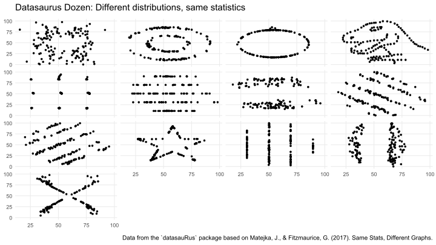
Scientific workflows: Tools and Tips 🛠️
2025-04-17
📅 Every 3rd Thursday 🕓 4-5 p.m. 📍 Webex
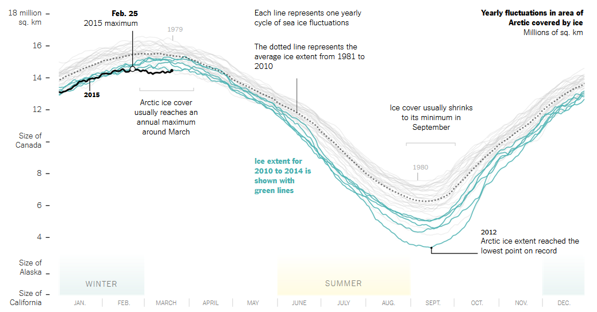
| Context | Things to consider |
|---|---|
| Paper | - Journal requirements - Usually read on PC but also print (B/W) - More time → Higher complexity |
| Poster | - More open design choice - Attract people from far - You quickly loose people to other posters - Medium complexity (depending on the event) |
| Talk | - You can use animations to guide through - Little time → less complex |

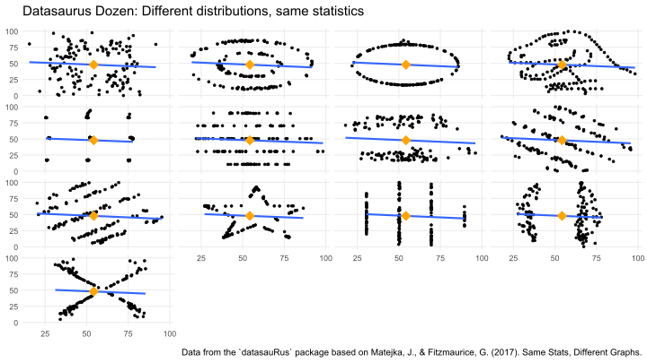
Bar graphs hide a lot of information about the data.
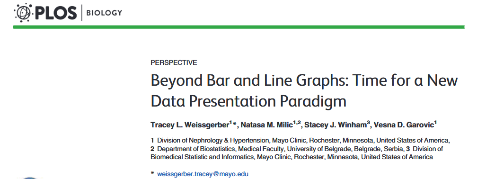
Same bar plot - different data & statistical test results
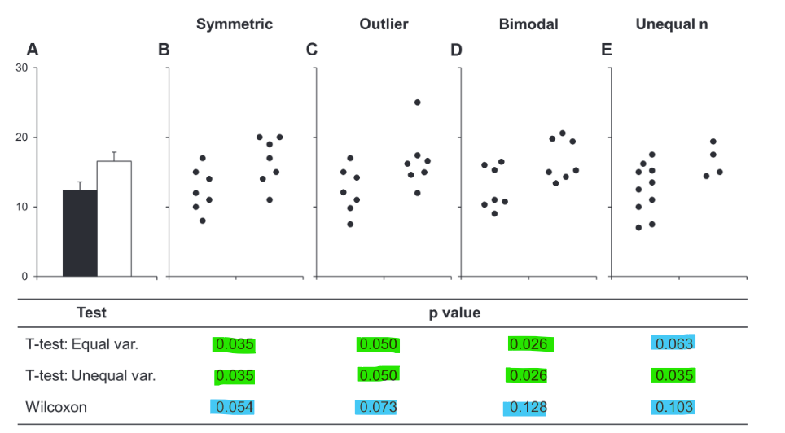
Bar plots only show mean ± SE/SD.
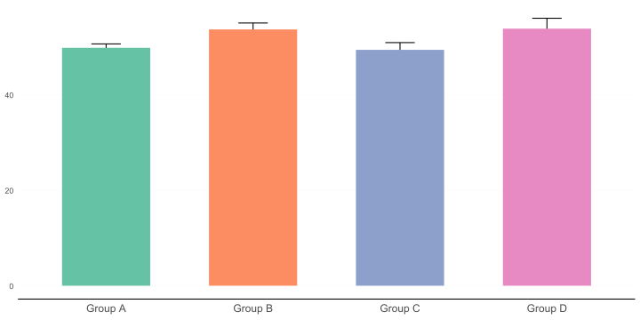
A box plot is already better (shows more of the distribution)
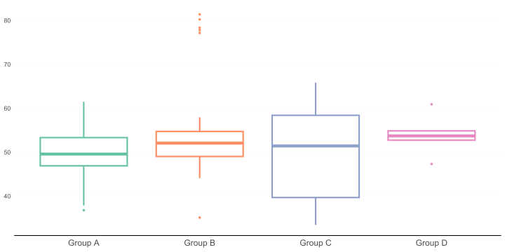
A box plot is already better (shows more of the distribution)
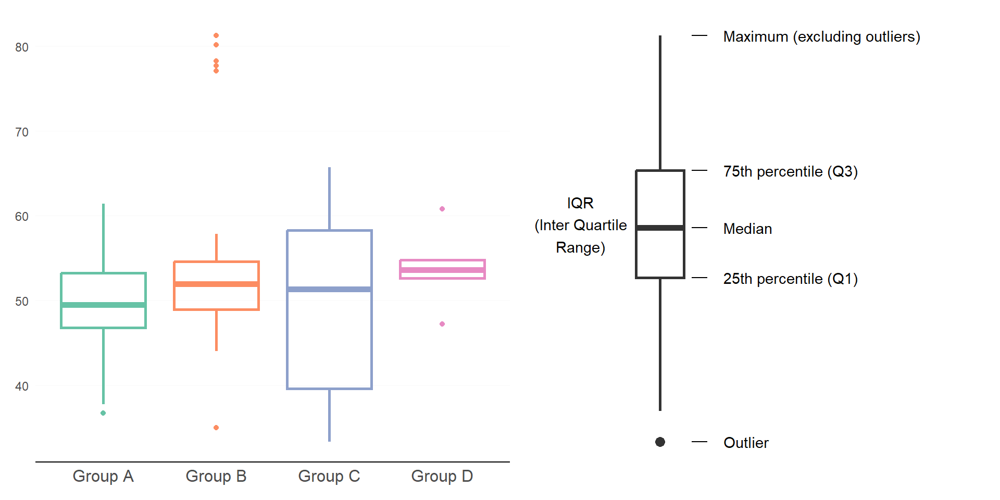
Add raw data points to increase the information content of the plot
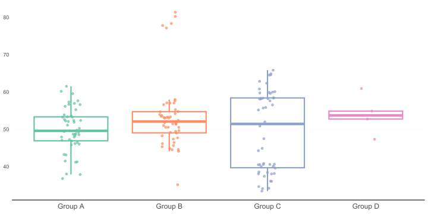
Raincloud plots show raw data, summary stats, and distribution
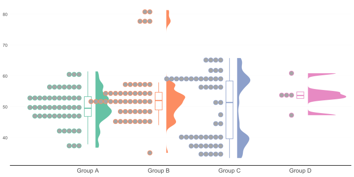
Sizes of shaded areas should be proportional to the data values they represent
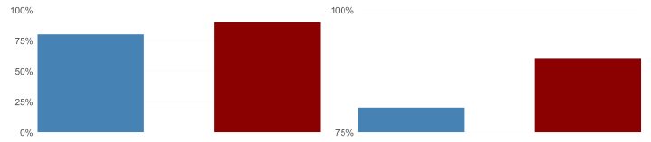
Here: bar length does not represent relative data proportions anymore
Always start bars at 0!
Other plot types don’t have to start at 0.
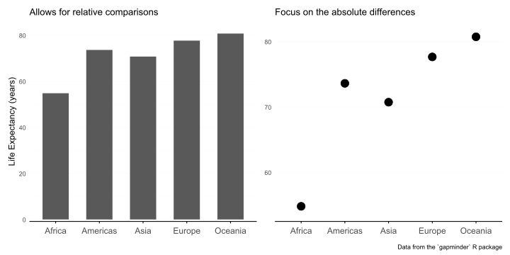
There are so many chart types - and cool tools to explore them
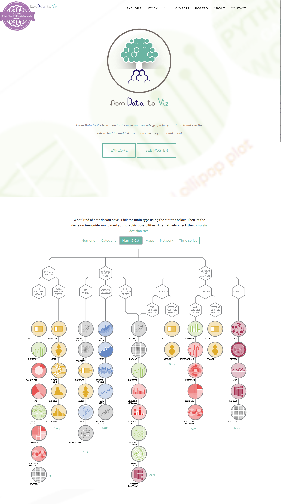
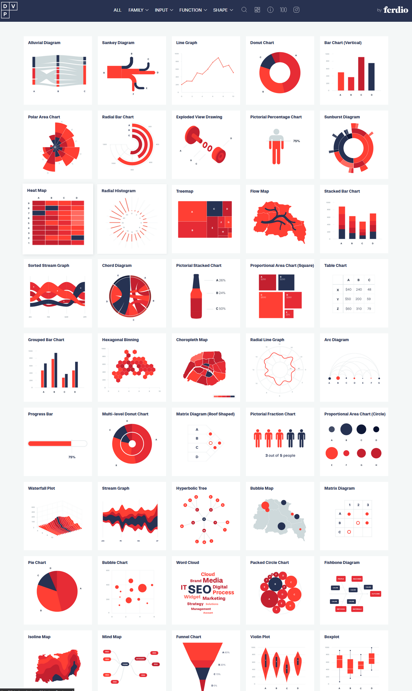
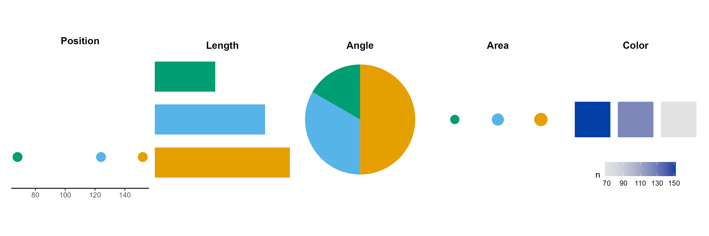
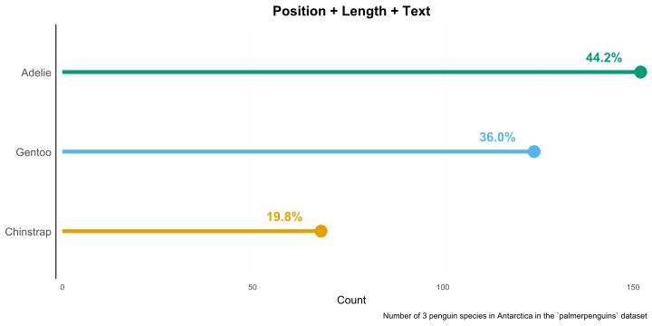
Arrange your plot so that it’s easy to extract the main message
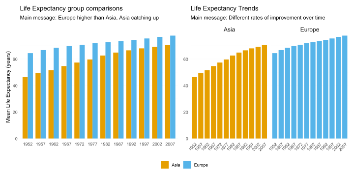
Different plot types tell different stories
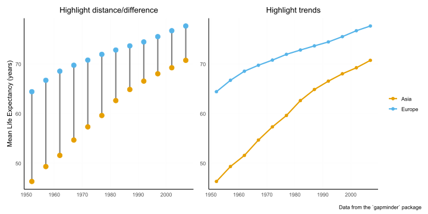
Don’t overcomplicate your figures and bury your message
What is the main message here?
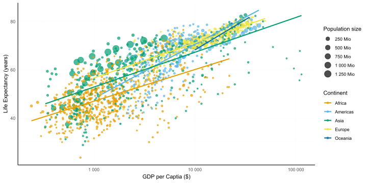
Message: Life expectancy and GDP differences in the world
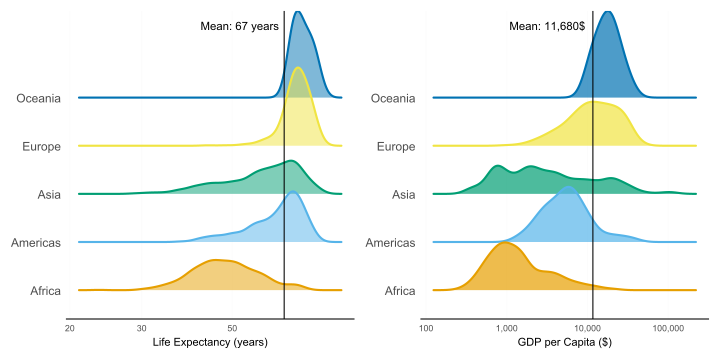
Goal: Make the trip (for the eyes and the brain) as short as possible
A story about the GDP China and India
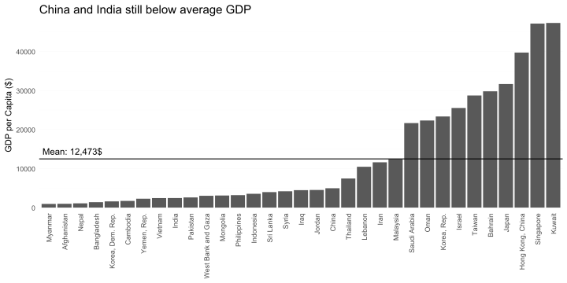
Reading labels upside down is a neck rotation - very annoying
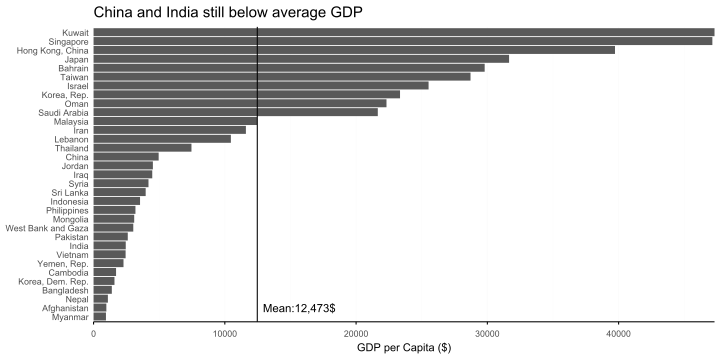
Use highlighting and de-emphasizing
Highlight focus contries, de-emphasize all others
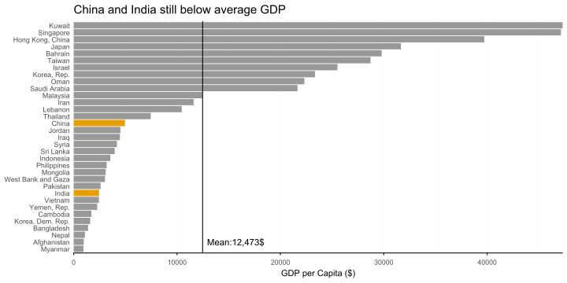
Highlight focus contries, de-emphasize all others
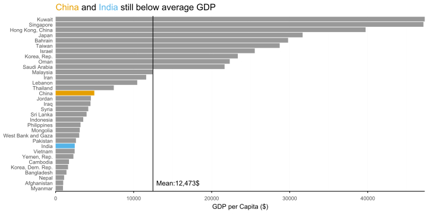
Order categories consciously not automatically.
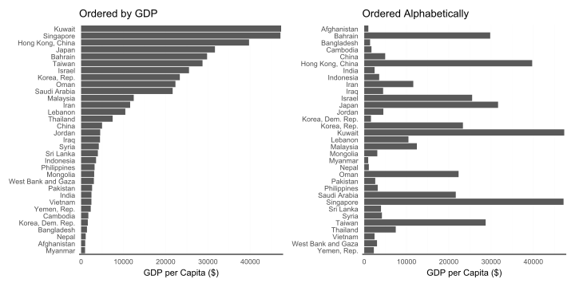
Order categories consciously not automatically.
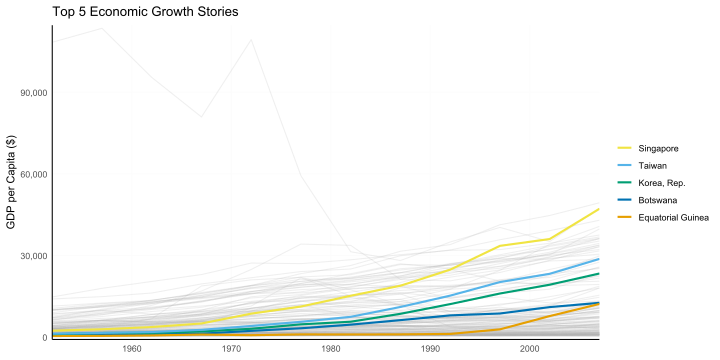
Use differences to communicate not to decorate
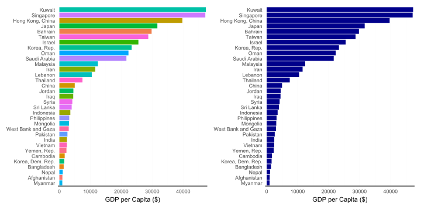
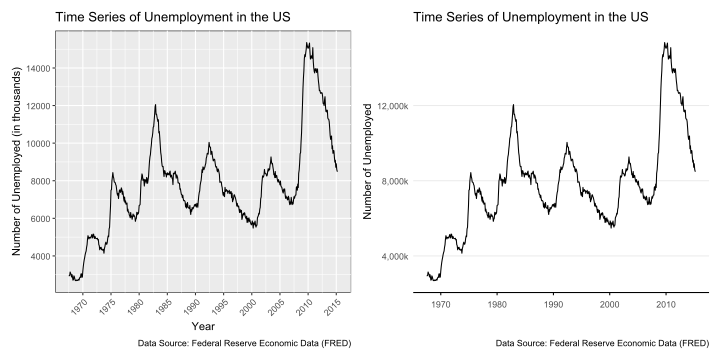
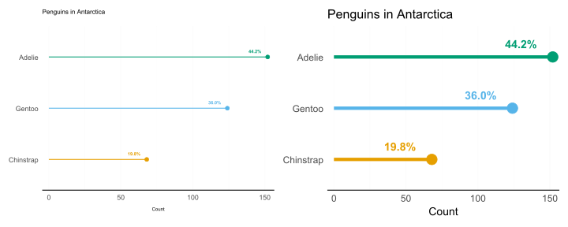
Make sure that the contrast is high enough
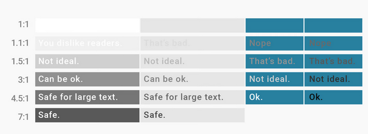
Use logical/intuitive colors
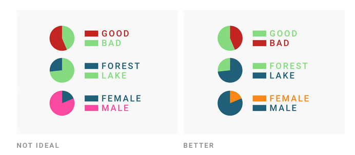
Choose colorblind friendly palettes (if in doubt: test!).
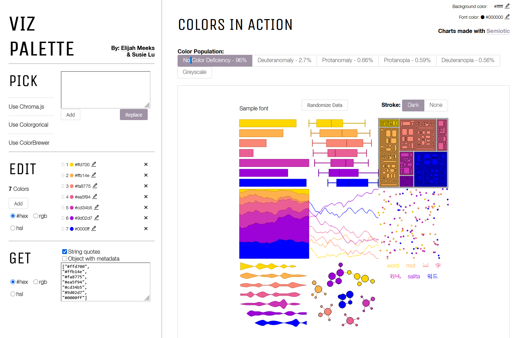
Redundancy increases the chance that everyone can see the difference!
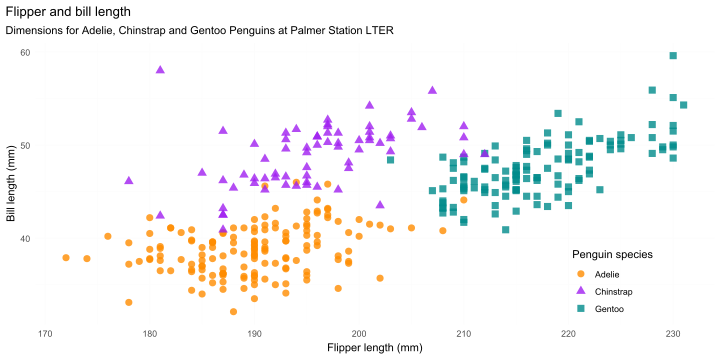
Start analyzing these points in yours and other people’s plots.
📅 15th May 🕒 3 - 4 p.m. 📍 Webex
🔔 Subscribe to the mailing list
📧 For topic suggestions and/or feedback send me an email
Questions?
Selina Baldauf // Fundamentals of Data Visualization